MIT PROFESSIONAL EDUCATION
Professional Certificate Program

Impact Project · 3. Transform Your Solution With Digital Technologies
Activities · Tutoring · Connections · Resources
By Group 13
Julia Yih · Guilherme Vieira · Jose Torrealba · Shacey Temperly
November 2026
Four agents, one student-centered companion
AI helps students find relevant support, local opportunities and belonging.
Discover arts, singing and cultural events
Explore clubs and campus activities
Filter by interest, date and distance
Find help in finance, accounting and pharmacy
Match with tutors, study groups or services
Compare subject, format and availability
Discover peers, mentors and alumni
Find interest-based groups and networks
Explore career and networking events
Find mental-health and student services
Locate screenings and contraception information
Discover recruiting and community opportunities
Belonging by design · Student choice · Human connection first
Group 13 · Content: Step 3 draft v5 (J. Yih, 2026-10-19) · Course link: M2.3 single vs multi-agent architectures
2
The idea in 92 seconds
Sofia’s phone, week by week.
The agent that acts.
The campus tool it uses.
The guardrail on each step.
Click the film to play it, with sound.
Group 13 · All people, places and data are fictional. Film built from the Compass prototype v0.2.0.
3
Agentic AI in practice
STUDENT
her need,
her words
COMPASS
orchestrator
routes each request
ACTIVITIES
Find community
TUTORING
Get course support
CONNECTIONS
Meet peers and mentors
RESOURCES
Find local opportunities
1 · ASK
One need, in her own words.
2 · ROUTE
Compass sends it to the right agent.
3 · CHOOSE
She picks the next step.
Personalized discovery · Student choice · Human support
Agents route each request; students choose what to do next.
Group 13 · Course links: M2.3 single vs multi-agent architectures · M5.6 centralized vs embedded agents
4
The prototype
WEEK 0 · ONBOARDING
M7.1 Data privacy
WEEK 1 · ACTIVITIES
M3.1 Agents in existing workflows
WEEK 3 · TUTORING
M3.3 Connecting agents (MCP)
WEEK 4 · CONNECTIONS
M2.3 Multi-agent architecture
WEEK 5 · RESOURCES
M3.4 Empathy · M7.3 Guardrails
WEEK 6 · RECRUITING
M5.6 Centralized vs embedded
Group 13 · Screen recording, Compass prototype v0.2.0, fictional data · Try it live: cptntrps.github.io/compass-demo
5
Local by design
50-MILE RADIUS
COLLEGE
Activities
Tutoring
Connections
Resources
Recommendations stay within 50 miles of the student’s college.
ACTIVITIES
Campus clubs, arts, cultural events and nearby gatherings
TUTORING
Peer tutors, study groups and academic support
CONNECTIONS
Student groups, mentors, alumni and networking events
RESOURCES
Hospitals, community health events and recruiting opportunities
Show location, date, eligibility and source when available.
Group 13 · 50-mile rule agreed in the group meeting, 2026-10-19 · Course link: M3.1 agents in existing workflows
6
Technology + governance
Start with trusted campus and community information; expand in stages.
Campus calendars
Tutoring directories
Student clubs and alumni
Hospital and community listings
Route requests to an agent
Filter by 50-mile radius
Rank by student interests
Cite source and update
Human-reviewed sources
Consent and data minimization
No diagnosis or clinical care
Escalate urgent needs to people
Students control what to save, share or act on. Compass complements university services.
PILOT ONE CAMPUS
Start at one college, not across dozens of universities.
REUSE EXISTING TOOLS
Connect calendars, directories, listings and approved AI platforms.
TRACK WHAT MATTERS
Relevance, engagement and how much Compass costs to operate.
SCALE AFTER REVIEW
Expand only with proven value, cost, information and safeguards.
Group 13 · Course links: M3.3 connecting agents (MCP) · M1.3 cost-optimized models · M7.1 to M7.4 governance
7
Impact + implementation
01 · DESIGN
Co-design journeys with students and staff
02 · PILOT
Test four agents at one college
03 · MEASURE
Review quality, trust and engagement
04 · SCALE
Expand after human review
Pilot, measure and scale only after human review.
RELEVANCE
Matches student needs
TRUST
Current, transparent sources
BELONGING
More student connection
EFFICIENCY
Cost per useful match
OUR PROMISE
One Student. Four Agents. Endless Possibilities.
Far from home, close to your goal.
Group 13 · Course links: M6.2 last-mile integration · M6.3 change management · M6.4 monitoring
8